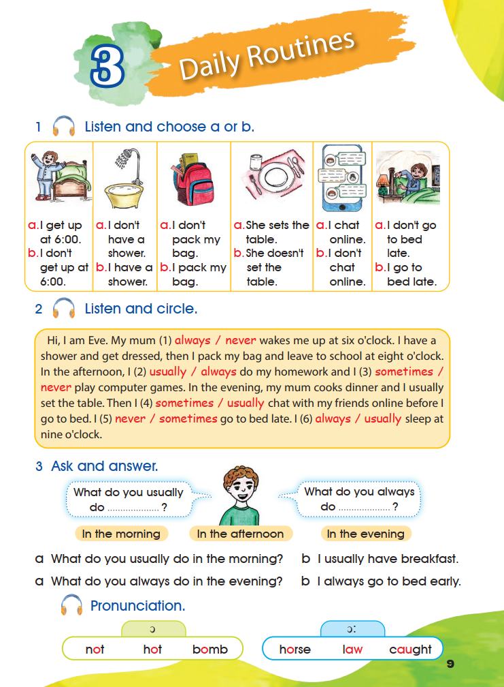
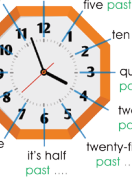

Pupil’s Book — Daily Routines
Activities 1–9 and the Pronunciation box appear in their original order. The book’s wording is transcribed from the three supplied pages. Listening notes are kept separate from that wording.
1 Listen and choose a or b.
0 of 6 chosen. Your choices are kept on this page.
No printed answer. The book gives no answer key for activity 1 and the recording was not supplied, so the correct option for each picture cannot be confirmed here. Play the original track and choose the sentence you hear.
The six pictures are original crops of page 9, not redrawn or generated.
Open the source page · Pupil’s Book · p. 9
This is the original supplied image, shown without redrawing or generation.

2 Listen and circle.
Hi, I am Eve. My mum (1) wakes me up at six o’clock. I have a shower and get dressed, then I pack my bag and leave to school at eight o’clock. In the afternoon, I (2) do my homework and I (3) play computer games. In the evening, my mum cooks dinner and I usually set the table. Then I (4) chat with my friends online before I go to bed. I (5) go to bed late. I (6) sleep at nine o’clock.
0 of 6 chosen. Your choices are kept on this page.
No printed answer. This is a listen-and-circle task: the word to circle depends on the recording, which was not supplied. The six printed pairs are reproduced in the order they appear on page 9.
Each pair keeps the printed order of the two words.
3 Ask and answer.
The book prints two questions, each with a dotted gap, and three time phrases below them. Fill each gap with one of the three printed phrases, then ask and answer with a partner.
What do you usually do ?
What do you always do ?
The three printed phrases:
- In the morning
- In the afternoon
- In the evening
a What do you usually do in the morning?
b I usually have breakfast.
a What do you always do in the evening?
b I always go to bed early.
Either printed phrase can complete either question: the book does not tie a phrase to one question, and the two printed examples use “in the morning” and “in the evening”. Both answers are correct English, so nothing is marked wrong here. The two examples show the pattern: the question asks with usually or always and the answer repeats that adverb.
Your own turn (practice, not printed in the book)
Ask your partner and write the answers you hear.
This is a speaking activity in the book. The two printed example pairs are quoted word for word; the answers you write above are personal, so no single answer is marked correct.
Pronunciation.
The short sound /ɒ/
- not
- hot
- bomb
The long sound /ɔː/
- horse
- law
- caught
The page prints two sound groups with their symbols: not, hot, bomb under the short sound, and horse, law, caught under the long sound. Say each group aloud and listen to the difference in length.
The first group is the short vowel in not, hot and bomb. The second group is the longer vowel in horse, law and caught. The words in each group share the sound printed above them. Accent varies between speakers; follow the recording if you have it.
4 Practise with a partner.
What time do you go to school?
I go to school at twenty to eight.
The book prints a clock diagram with twelve spoken time forms around it, each followed by a dotted gap. Every form names the minutes and the direction — past or to — and the gap is where the hour goes: five past … wants the hour you are counting from, and five to … wants the hour you are counting to. Read the dial and complete each printed form with an hour that fits it.

One worked example, not a key. The printed answer bubble on the page says “I go to school at twenty to eight.” To speak a time this way, say the minutes and then past or to the hour:
- o’clock — exactly on the hour: seven o’clock
- five / ten / twenty / twenty-five past — minutes after the hour: five past seven
- quarter past — fifteen minutes after: quarter past seven
- half past — thirty minutes after: half past seven
- twenty-five / twenty / ten / five to — minutes before the next hour: ten to eight
- quarter to — fifteen minutes before the next hour: quarter to eight
The clock drawing and the twelve labelled forms are printed on page 10. This explanation is teaching guidance, not a printed key.
5 Before you read, examine the chart and fill in the blanks.
Look at the chart. Each tick (✓) is a day the action happened and each cross (✕) is a day it did not. Then choose the frequency adverb that matches the pattern in each line.
| Frequency adverb | Sun | Mon | Tues | Wed | Thur |
|---|---|---|---|---|---|
| Always | ✓ | ✓ | ✓ | ✓ | ✓ |
| Usually | ✓ | ✓ | ✓ | ✓ | ✕ |
| Sometimes | ✓ | ✕ | ✓ | ✕ | ✓ |
| Never | ✕ | ✕ | ✕ | ✕ | ✕ |
Each sentence below is printed with the five chart marks shown beside it. Write the frequency adverb that matches those marks.
- 1
get up at six o’clock.
Marks printed beside this line: ✓ ✓ ✓ ✓ ✓
- 2
do my homework in the afternoon.
Marks printed beside this line: ✓ ✓ ✓ ✓ ✕
- 3
chat with my friends online.
Marks printed beside this line: ✓ ✕ ✓ ✕ ✓
- 4
go to bed late.
Marks printed beside this line: ✕ ✕ ✕ ✕ ✕
The four printed sentences all begin with “I”. The five marks printed next to each sentence are reproduced exactly, so you can read the answer from the chart rows.
The chart has one row for each adverb, so the row whose five marks match a printed line gives the adverb:
- ✓ ✓ ✓ ✓ ✓ is the Always row.
- ✓ ✓ ✓ ✓ ✕ is the Usually row.
- ✓ ✕ ✓ ✕ ✓ is the Sometimes row.
- ✕ ✕ ✕ ✕ ✕ is the Never row.
This follows directly from the printed chart. The book prints no separate key for activity 5.
6 Read and do the tasks below.
I am Mira, I love Friday. It’s a holiday. I don’t get up early. I usually take a shower and have breakfast with my family. Then I tidy my room and my brother cleans the grage, he doesn’t ask me to help him. In the afternoon, I sometimes go out with my family on a picnic. We like to spend time together. In the evening, my father watches the news. My mother doesn’t watch the news, she likes to cook dinner. The whole family shares in the houswork. We never go to bed early on Thursdays so we always watch a film after dinner.
Printed exactly as in the book, including two spelling oddities: the passage prints “grage” and “houswork”. They are kept unchanged here rather than silently corrected.
a Write true (T) or false (F).
- 1
Mira likes weekends.
- 2
She doesn’t tidy her bedroom.
- 3
Her mother doesn’t cook dinner.
- 4
Her dad watches the news.
- 5
Mira goes to bed early on Saturdays.
0 of 5 answered.
b Tell who.
Write the person from the text who does each thing. Use the words the text uses.
- 1
loves Friday.
- 2
cleans the house.
- 3
doesn’t watch news.
- 4
cooks dinner.
- 5
goes to bed early.
a. True or false
- Mira likes weekends. — Not settled by the printed text. The passage says “I am Mira, I love Friday. It’s a holiday.” and “I don’t get up early”, but the words “weekends” and “Saturday” never appear. Liking Friday (the holiday day of the school week in this book) supports T, while the text says nothing at all about the other weekend day, so this item is left for the teacher and is not marked right or wrong here.
- She doesn’t tidy her bedroom. — False. “Then I tidy my room”.
- Her mother doesn’t cook dinner. — False. “my mother … likes to cook dinner”.
- Her dad watches the news. — True. “In the evening, my father watches the news.”
- Mira goes to bed early on Saturdays. — Not settled by the printed text. The passage says “We never go to bed early on Thursdays so we always watch a film after dinner”. That sentence is about Thursdays, and the word “Saturday” does not appear anywhere in the text, so this item cannot be answered with certainty from the passage and is left for the teacher.
b. Tell who
- loves Friday. — Mira
- cleans the house. — Mira’s brother. The printed sentence is “my brother cleans the grage”; the page prints “grage”, which is the passage’s spelling of garage. The item says “house”, so the wording of the two does not match exactly.
- doesn’t watch news. — Mira’s mother
- cooks dinner. — Mira’s mother
- goes to bed early. — No single person in the text does. The passage says “We never go to bed early on Thursdays”, using we for the whole family, so no individual is named and an answer such as “the family — nobody” is the one the text supports.
These answers come from the printed passage. The book prints no key of its own for activity 6: items 1 and 5 are reported above as not settled by the text rather than being given an invented answer, and your own choice on those two is never marked wrong.
Let’s Learn: the present simple
I / you / we / they
- I drink milk in the morning.
- I don’t drink milk in the morning.
- Do you drink milk in the morning?
He / she / it
- He drinks milk in the morning.
- He doesn’t drink milk in the morning.
- Does he drink milk in the morning?
With I, you, we and they, the verb has no extra ending and the negative uses don’t. With he, she and it, the verb takes -s and the negative uses doesn’t. In questions, the helping verb comes first: Do … ? or Does … ?, and then the main verb has no ending.
7 Choose between brackets.
Choose the correct word from each pair of brackets.
- 1
Lili never the piano at night.
- 2
they go to the swimming pool on Fridays?
- 3
Toni always dinner.
- 4
Rida and Talin their parents in the kitchen.
- 5
We go to school by bus.
- 6
she play basketball?
0 of 6 answered.
- Lili never plays the piano at night. (Lili = she, so the verb takes -s)
- Do they go to the swimming pool on Fridays? (they takes Do)
- Toni always has dinner. (Toni = he/she, so have becomes has)
- Rida and Talin help their parents in the kitchen. (two people = they, no -s)
- We don’t go to school by bus. (we takes don’t)
- Does she play basketball? (she takes Does, and play stays plain)
These follow the Let’s Learn box on the same page. The book prints no key for activity 7.
8 Put the words in the right order.
Each line of words is printed with a full stop or a question mark at the end of one word. Rearrange the words into one correct sentence and keep the punctuation the book uses.
- 1
- evening.
- usually
- pack
- the
- I
- bag
- my
- in
- 2
- sometimes
- breakfast.
- don’t
- We
- have
- 3
- they
- Do
- go
- on
- school
- to
- foot?
- 4
- Jad
- football
- always
- every
- plays
- weekend
- I usually pack my bag in the evening.
- We sometimes don’t have breakfast.
- Do they go to school on foot?
- Jad always plays football every weekend.
Each order follows the Let’s Learn box on the same page: the frequency adverb sits before the main verb, Do or Does opens a question, and the capital letter printed on one word shows where the sentence begins. The book prints no key for activity 8.
9 Write sentences about your daily routine.
The book prints an example first, then three frames to complete.
1 I usually wake up at six o’clock in the morning. printed in the book
- 2
- 3
- 4
This is personal writing. Any true sentence about your own day is correct, so no single answer is supplied and nothing here is marked wrong.